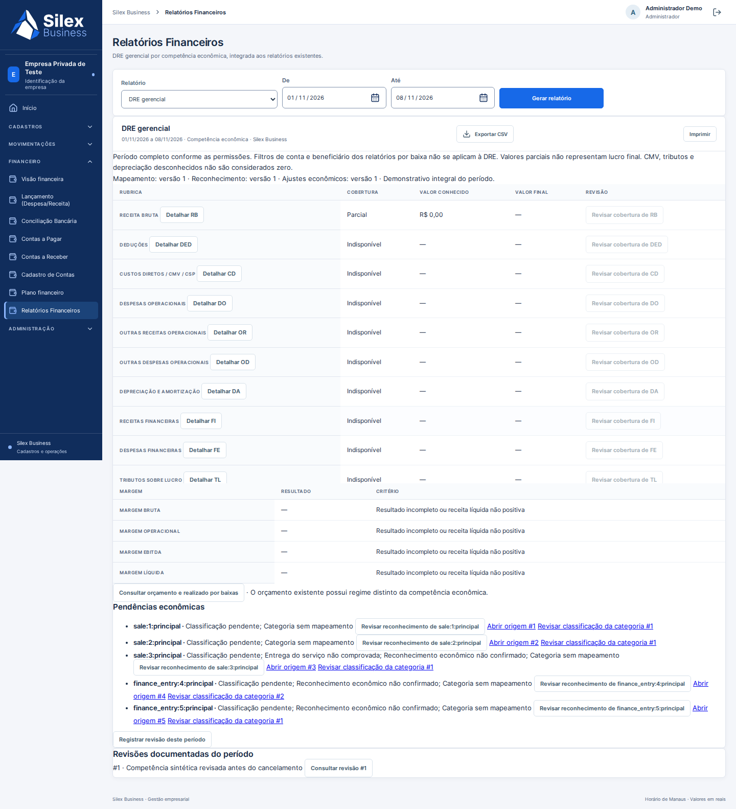

Correções do PR15
Navegadores reais, SQLite descartável, dados fictícios. Sem Railway ou dados reais.
Relatório · PDF A4 do ajuste econômico
Início equilibrado — ChromiumInício — Firefox, 375 pxDRE com ajuste econômico — Chromium
DRE após ajuste — Firefox, 375 px